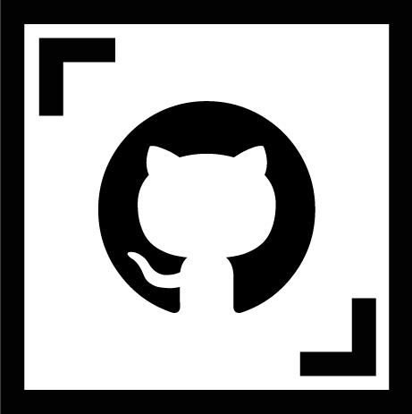
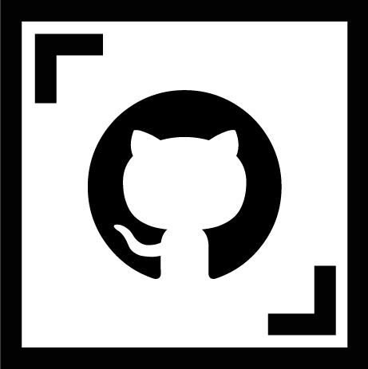

My Portfolio
They say the third times the charm, or maybe the fourth is more accurate! For my portfolio I was determined to use all my favorite skills I had learned in class, and then some. I originally set out to do a long scrolling page with individual project pages, but over the course of time working on it I changed more than a few things! Scroll down to see what changed and what made the cut.


 



The Planning
During the initial planning process I started with a hand drawn wireframe but had a hard time visualizing how I wanted my project pages to be laid out and tried to do them without a plan. That didn’t work out very well and by my third design I decided that I needed to plan first before starting. I had a general idea of things I would like to do but in the end I just wasn’t happy with it. I decided it would be worth it to take the time and mock it up fully in Adobe Illustrator before starting to code. With the exception of this page and its content I had everything laid out and ready to go visually before I started my fourth design. Evidentally that was the key to success here as I am much happier with this design and layout than I was with any of the previous ones.
My original plan was to have a gallery of images related to the project as well as some key images to show the important aspects of the process. I also wanted to showcase that my projects were uploaded to github where code could be viewed. After completing my third design I really felt that I hadn’t highlighted the key points very well or even showcased my code in a way that was easily available to those looking for it. In my final design I decided to omit the colored background in hopes of making my coding stand out more. I decided to go with a more sectioned feel in order to capture the different stages as they happened and to be able to showcase my code in a more efficient manner right on my portfolio. For projects that have Git Repos and live sites I have also linked those to be viewed.
The Design
For the design portion of this project I struggled to find something that suited my style while also not being too plain and boring. My first design was simple like this final version, however I wasn’t happy with other parts so when I started redoing it I decided to play around with the colors. When it came to doing a complete mockup of the entire site I decided that I needed to keep it very professional and showcase the most important parts rather than trying to get as much on the page as possible or just adding things to fill up space. I also decided to create a ‘brand’ for myself with a small icon which I used as my home link in the navigation bar as well as for my favicon. The accent color I chose was from the original image I purchased for my home page hero which I ended up changing my mind about.
The Code
My portfolio is the first project that I used Github right from the start with other than the group responsive and final client project in class which were already set up for us. I learned a few more things and solidified my previous knowledge for using Github and felt a lot more comfortable using these features of version control. File structure is not a new thing to me as I am very organized, however this was my first time working with a development and distribution format. My other projects that use this format were put that way after the project was over in order to better showcase my content and learn how to minify my code.
Another new tool I learned how to use is Gulp! I started by doing the Gulp for beginners tutorial on css-tricks.com and then in order to get a better understanding of it I decided to use what I had learned in my final portfolio design. While most of the code here is from that tutorial, I have learned how these functions are working by applying it to an actual project.
In the code examples below I show my navigation which has different states for mobile and desktop and also has some list items hidden or shown depending on the screen size using media queries.
Portfolio Page Navigation and Mobile menu toggle
<header>
<nav class="flex-nav">
<a href="#0" class="toggleNav">☰ Menu</a>
<ul>
<li class="mobilehome"><a href="index.html">Home</a></li>
<li><a href="work.html">Work</a></li>
<li><a href="about.html">About</a></li>
<li class="brandlogo">
<a href="index.html"><img src="images/CH.png" alt="Crystal Henderson Logo"></a>
</li>
<li><a href="skills.html">Skills</a></li>
<li><a href="contact.html">Contact</a></li>
</ul>
</nav>
</header>
Portfolio Page Navigation CSS
.flex-nav {
position: fixed;
top: 0;
background-color: white;
border-bottom: 2px solid #BB0052;
display: flex;
line-height: 50px;
flex-wrap: wrap;
z-index: 9999;
width: 100%;
}
.flex-nav ul,
.brandlogo img {
display: none;
}
.flex-nav ul.open {
display: flex;
flex-direction: column;
width: 100%;
text-align: center;
}
.flex-nav a {
margin: 0 auto;
text-decoration: none;
}
@media only screen and (min-width: 768px) {
.toggleNav,
.mobilehome {
display: none;
}
.flex-nav ul {
display: flex;
width: 100%;
height: 50px;
}
.flex-nav li {
width: calc(100% / 5);
text-align: center;
}
}